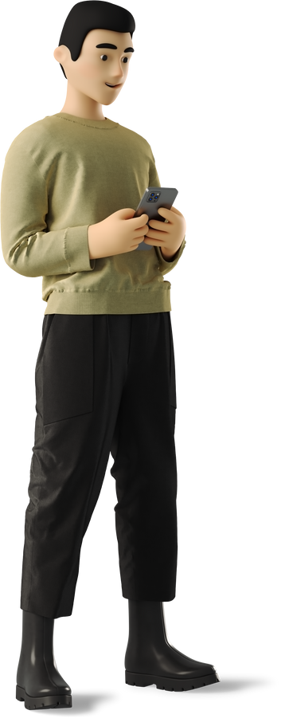

Seja bem vindo ao meu portifólio!
Esse site foi pensado no conceito de navagção fácil. Fique a vontade para saber tudo sobre meus prjetos e minhas skils, ultilize o menu superior para navegar entre páginas! Sinta-se à vontade para clonar esse site, faça isso através do código disponivel no GitHub ou use o Clone Site.
Baixar Clone Site
